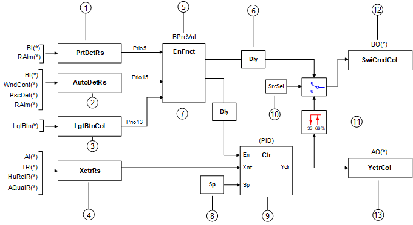
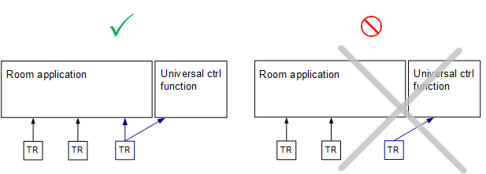

通用控制功能（UCtlFnct11 / UCtlFnct12）
Overview
应用功能》Universal control function, PID controller, binary output (BO), analog output (AO)" (UCtlFnct11/12) 是一个为灵活定制而设计的通用函数。它可以配置为处理各种自动化任务。
UCtlFnct11和UCtlFnct12功能相同。每个都可以配置/定制来处理独特的自动化任务。
主要特点：
- Loop object with multiple control input
- Configurable evaluation parameters for the control input
- Automatic enable/disable function with priority 15
- Protection enable/disable function with priority 5
- Triac control for auxiliary output functions
- AO and/or BO command output(s)
- Configurable switch-on, switch-off points for converting loop output to binary signal
- Configurable delay options
Function
输入和输出源自 BACnet 对象到集合对象的可选分配。每个 I/O 排列取决于通用控制功能的定制配置。
Inputs:
- Control input: XctrCol (Collection of input to the PID controller).
- Binary input: AutoDetCol (Collection of automatic detector). Automatic control priority 15.
- Binary input: PrtDetCol (Collection of equipment protection detector). Priority 5.
- Binary input: LgtBtnCol (Activate a triac for auxiliary output functions, not for lighting control). Priority 13.
Outputs:
- Control Output: YctrCol (Collection of controller output).
- Binary Output: SwiCmdCol (Collection of switch command).
Process value objects:
- EnFnct (BPrcVal)
- Sp (APrcVal)
启用功能 (EnFnct) 的值启用/disables 二进制输出。各种输入分别以优先级 15（自动检测）、优先级 13 (LgtBtnCol) 或优先级 5（保护检测）启用/disable EnFnct。见图。
EnFnct 还用于启用 /disable 控制循环。启用后，控制环路会调制控制器输出 (YctrCol)，以将控制器输入 (XctrCol) 维持在设定值。控制回路的设定值是一个过程值对象，可以通过其他设备的命令进行设置。

Legend
图例描述了一般功能。有关更多详细信息，请参阅配置。
1 | PrtDetRs | BACnet 对象，表示用于设备保护（Prio 5）的二进制输入的计算结果。备用二进制输入 BI(*) 可以分配给集合对象 (PrtDetCol)。在 CET 应用程序中，还可以分配房间警报对象（RAlm，来自房间的警报）。 |
2 | AutoDetRs | BACnet 对象，表示用于自动检测（Prio 15）的二进制输入的计算结果。窗口触点 (WndCont)、存在检测器 (PscDet) 和备用二进制输入 BI(*) 可以分配给集合对象 (AutoDetCol)。在 CET 应用程序中，还可以分配房间警报对象（RAlm，来自房间的警报）。 |
3 | LgtBtnCol | 允许使用 PL-Link 墙壁开关来控制三端双向可控硅开关元件以实现辅助输出功能。由于通用控制功能在 DXR 中以较低优先级运行，因此请勿将此双向可控硅输出功能用于需要保证响应时间低于 300ms 的功能（例如房间照明和遮阳控制；响应时间可能约为一秒，具体取决于运行时的内部进程。） |
4 | XctrRs | BACnet 对象，表示通用控制功能中使用的模拟输入的计算结果。支持的输入（包括 KNX PL-链接）： |
5 | EnFnct | BACnet 对象，使用二进制输入的评估结果来启用 /disable 控制功能。 |
6 | DlySwiCmd | 可配置延迟参数，默认60秒。 |
7 | DlyEnCtr | 可配置延迟参数，默认60秒。 |
8 | Sp | 循环对象的可配置设定值。 |
9 | Ctr | 循环对象。 |
10 | SrcSelSwiCmd | 选择 EnFnct 信号或 PID 控制器信号发送到 SwiCmdCol （开关命令集合）对象的源选择参数。 |
11 | SwiOnPt | 使用可配置的开启、关闭点将 PID 控制器信号从模拟值转换为二进制值。 （默认66%开启，33%关闭） |
12 | SwiCmdCol | 二进制输出值。仅备用二进制输出 BO(*) 可以分配给集合对象。 |
13 | YctrCol | 模拟输出值。仅备用模拟输出 AO(*) 可以分配给集合对象。 |

TR, HuRelR, and AQualR Inputs Are Always Part of Room Calculation
当这些输入用于通用控制功能时，总是与房间计算相关联。参见图形。
（显示了 TR 输入，但也适用于 HuRelR 和 AQualR）

Example use cases
示例 1：风门末端开关将 EnFnct 触发为 No/Yes. EnFnct 激活启用风扇的 BO。 30 秒延迟后，PID 循环将启用，并开始控制风扇速度以维持压力设定值。 （延迟时间可配置，默认60秒。）
示例2：根据时间表打开/off PID 循环，以通过散热器控制浴室温度。
Configuration
 Parameters
Parameters
描述 | 范围 | 默认值 |
|---|---|---|
Delay for switching command | DlySwiCmd | 60 [s] |
Delay for enable controller | DlyEnCtr | 60 [s] |
Source selection for switching command 0:Enable function | SrcSelSwiCmd | 1:Controller |
Controller action 0:Direct | CtrActg | 0:Direct |
Controller input evaluation 1:Sum | XctrEvl | 2:Average |
Automatic detector evaluation 1:AND | AutoDetEvl | 2:OR |
Protection detector evaluation 枚举见Automatic detector evaluation | PrtDetEvl | 2:OR |
Protection mode configuration 0:Off | PrtModCnf | 0:Off |
Switch-on point | SwiOnPt | 66 [%] |
Switch-off point | SwiOffPt | 33 [%] |
Interface
界面 | 描述 | 类型 | 参考号 | 拥有者 | |
|---|---|---|---|---|---|
YctrCol | Collection of controller output | ColView | ● | - | |
| YctrRs | Result of controller output | ACalcVal | ● | - |
XctrCol | Collection of controller input | ColView | ● | - | |
| XctrRs | Result of controller input | ACalcVal | ● | - |
Sp | Setpoint | APrcVal | ● | - | |
EnFnct | Enable function 0:No | BPrcVal | ● | - | |
Ctr | Controller | 控制器 | ● | - | |
SwiCmdCol | Collection of switching command | ColView | ● | - | |
| SwiCmdRs | Result of switching command
| BCalcVal | ● | - |
AutoDetCol | Collection of automatic detector | ColView | ● | - | |
| AutoDetRs | Result of automatic detector 0:Off | BCalcVal | ● | - |
PrtDetCol | Collection of protection detector | ColView | ● | - | |
| PrtDetRs | Result of protection detector 0:Off | BCalcVal | ● | - |
LgtBtnCol | Collection of lighting pushbutton | ColView | ● | - | |
| LgtBtn | Lighting pushbutton 0:Off | LgtIn | ● | - |
Engineering and commissioning
Expert use (CFC programming):
- UCtlFnct11/12 used as basic structure for custom programming.
- Connect BACnet objects to the universal control function AF inputs to "add features" to the application (not just unrelated automation functions). The user re-addresses the input XFB(s) in the universal control function so they read temperatures, flows or other values from the application.
- Drive BACnet objects in the existing application. To do this successfully, the user must pay attention to the priority of the pre-programmed commands and those added to the same objects.